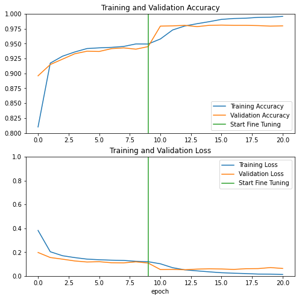

Transferencia de aprendizaje con una red ConvNet pre-entrenada¶
30 min | Última modificación: Abril 6, 2020.
[1]:
import os
import numpy as np
import PIL.Image as Image
import matplotlib.pyplot as plt
%matplotlib inline
import tensorflow as tf
import tensorflow_hub as hub
import tensorflow_datasets as tfds
print(tf.__version__)
print(hub.__version__)
tfds.disable_progress_bar()
#
# Librerias adicionales para graficación
#
import tensorflow_docs as tfdocs
import tensorflow_docs.plots
import tensorflow_docs.modeling
#
# Establece el nivel de reporte en
# pantalla de TensorFlow
#
import logging
logger = tf.get_logger().setLevel(logging.ERROR)
2.1.0
0.8.0
Descarga del dataset¶
[2]:
#
# Descarga del dataset cats vs dogs
#
(raw_train, raw_validation, raw_test), metadata = tfds.load(
"cats_vs_dogs",
split=["train[:80%]", "train[80%:90%]", "train[90%:]"],
with_info=True,
as_supervised=True,
)
Downloading and preparing dataset cats_vs_dogs/4.0.0 (download: 786.68 MiB, generated: Unknown size, total: 786.68 MiB) to /root/tensorflow_datasets/cats_vs_dogs/4.0.0...
/usr/local/lib/python3.6/dist-packages/urllib3/connectionpool.py:1004: InsecureRequestWarning: Unverified HTTPS request is being made to host 'download.microsoft.com'. Adding certificate verification is strongly advised. See: https://urllib3.readthedocs.io/en/latest/advanced-usage.html#ssl-warnings
InsecureRequestWarning,
WARNING:absl:1738 images were corrupted and were skipped
Shuffling and writing examples to /root/tensorflow_datasets/cats_vs_dogs/4.0.0.incomplete4U93YZ/cats_vs_dogs-train.tfrecord
Dataset cats_vs_dogs downloaded and prepared to /root/tensorflow_datasets/cats_vs_dogs/4.0.0. Subsequent calls will reuse this data.
[3]:
print(raw_train)
print(raw_validation)
print(raw_test)
<DatasetV1Adapter shapes: ((None, None, 3), ()), types: (tf.uint8, tf.int64)>
<DatasetV1Adapter shapes: ((None, None, 3), ()), types: (tf.uint8, tf.int64)>
<DatasetV1Adapter shapes: ((None, None, 3), ()), types: (tf.uint8, tf.int64)>
[4]:
#
# Primeras dos imágenes
#
get_label_name = metadata.features["label"].int2str
for image, label in raw_train.take(2):
plt.figure()
plt.imshow(image)
plt.title(get_label_name(label))


Preparación de los datos¶
[5]:
IMG_SIZE = 160
def format_example(image, label):
image = tf.cast(image, tf.float32)
image = (image / 127.5) - 1
image = tf.image.resize(image, (IMG_SIZE, IMG_SIZE))
return image, label
train = raw_train.map(format_example)
validation = raw_validation.map(format_example)
test = raw_test.map(format_example)
[6]:
BATCH_SIZE = 32
SHUFFLE_BUFFER_SIZE = 1000
train_batches = train.shuffle(SHUFFLE_BUFFER_SIZE).batch(BATCH_SIZE)
validation_batches = validation.batch(BATCH_SIZE)
test_batches = test.batch(BATCH_SIZE)
for image_batch, label_batch in train_batches.take(1):
pass
image_batch.shape
[6]:
TensorShape([32, 160, 160, 3])
Creación del modelo base¶
[7]:
IMG_SHAPE = (IMG_SIZE, IMG_SIZE, 3)
base_model = tf.keras.applications.MobileNetV2(
input_shape=IMG_SHAPE, include_top=False, weights="imagenet"
)
Downloading data from https://github.com/JonathanCMitchell/mobilenet_v2_keras/releases/download/v1.1/mobilenet_v2_weights_tf_dim_ordering_tf_kernels_1.0_160_no_top.h5
9412608/9406464 [==============================] - 5s 1us/step
[8]:
feature_batch = base_model(image_batch)
print(feature_batch.shape)
(32, 5, 5, 1280)
[9]:
base_model.trainable = False
base_model.summary()
Model: "mobilenetv2_1.00_160"
__________________________________________________________________________________________________
Layer (type) Output Shape Param # Connected to
==================================================================================================
input_1 (InputLayer) [(None, 160, 160, 3) 0
__________________________________________________________________________________________________
Conv1_pad (ZeroPadding2D) (None, 161, 161, 3) 0 input_1[0][0]
__________________________________________________________________________________________________
Conv1 (Conv2D) (None, 80, 80, 32) 864 Conv1_pad[0][0]
__________________________________________________________________________________________________
bn_Conv1 (BatchNormalization) (None, 80, 80, 32) 128 Conv1[0][0]
__________________________________________________________________________________________________
Conv1_relu (ReLU) (None, 80, 80, 32) 0 bn_Conv1[0][0]
__________________________________________________________________________________________________
expanded_conv_depthwise (Depthw (None, 80, 80, 32) 288 Conv1_relu[0][0]
__________________________________________________________________________________________________
expanded_conv_depthwise_BN (Bat (None, 80, 80, 32) 128 expanded_conv_depthwise[0][0]
__________________________________________________________________________________________________
expanded_conv_depthwise_relu (R (None, 80, 80, 32) 0 expanded_conv_depthwise_BN[0][0]
__________________________________________________________________________________________________
expanded_conv_project (Conv2D) (None, 80, 80, 16) 512 expanded_conv_depthwise_relu[0][0
__________________________________________________________________________________________________
expanded_conv_project_BN (Batch (None, 80, 80, 16) 64 expanded_conv_project[0][0]
__________________________________________________________________________________________________
block_1_expand (Conv2D) (None, 80, 80, 96) 1536 expanded_conv_project_BN[0][0]
__________________________________________________________________________________________________
block_1_expand_BN (BatchNormali (None, 80, 80, 96) 384 block_1_expand[0][0]
__________________________________________________________________________________________________
block_1_expand_relu (ReLU) (None, 80, 80, 96) 0 block_1_expand_BN[0][0]
__________________________________________________________________________________________________
block_1_pad (ZeroPadding2D) (None, 81, 81, 96) 0 block_1_expand_relu[0][0]
__________________________________________________________________________________________________
block_1_depthwise (DepthwiseCon (None, 40, 40, 96) 864 block_1_pad[0][0]
__________________________________________________________________________________________________
block_1_depthwise_BN (BatchNorm (None, 40, 40, 96) 384 block_1_depthwise[0][0]
__________________________________________________________________________________________________
block_1_depthwise_relu (ReLU) (None, 40, 40, 96) 0 block_1_depthwise_BN[0][0]
__________________________________________________________________________________________________
block_1_project (Conv2D) (None, 40, 40, 24) 2304 block_1_depthwise_relu[0][0]
__________________________________________________________________________________________________
block_1_project_BN (BatchNormal (None, 40, 40, 24) 96 block_1_project[0][0]
__________________________________________________________________________________________________
block_2_expand (Conv2D) (None, 40, 40, 144) 3456 block_1_project_BN[0][0]
__________________________________________________________________________________________________
block_2_expand_BN (BatchNormali (None, 40, 40, 144) 576 block_2_expand[0][0]
__________________________________________________________________________________________________
block_2_expand_relu (ReLU) (None, 40, 40, 144) 0 block_2_expand_BN[0][0]
__________________________________________________________________________________________________
block_2_depthwise (DepthwiseCon (None, 40, 40, 144) 1296 block_2_expand_relu[0][0]
__________________________________________________________________________________________________
block_2_depthwise_BN (BatchNorm (None, 40, 40, 144) 576 block_2_depthwise[0][0]
__________________________________________________________________________________________________
block_2_depthwise_relu (ReLU) (None, 40, 40, 144) 0 block_2_depthwise_BN[0][0]
__________________________________________________________________________________________________
block_2_project (Conv2D) (None, 40, 40, 24) 3456 block_2_depthwise_relu[0][0]
__________________________________________________________________________________________________
block_2_project_BN (BatchNormal (None, 40, 40, 24) 96 block_2_project[0][0]
__________________________________________________________________________________________________
block_2_add (Add) (None, 40, 40, 24) 0 block_1_project_BN[0][0]
block_2_project_BN[0][0]
__________________________________________________________________________________________________
block_3_expand (Conv2D) (None, 40, 40, 144) 3456 block_2_add[0][0]
__________________________________________________________________________________________________
block_3_expand_BN (BatchNormali (None, 40, 40, 144) 576 block_3_expand[0][0]
__________________________________________________________________________________________________
block_3_expand_relu (ReLU) (None, 40, 40, 144) 0 block_3_expand_BN[0][0]
__________________________________________________________________________________________________
block_3_pad (ZeroPadding2D) (None, 41, 41, 144) 0 block_3_expand_relu[0][0]
__________________________________________________________________________________________________
block_3_depthwise (DepthwiseCon (None, 20, 20, 144) 1296 block_3_pad[0][0]
__________________________________________________________________________________________________
block_3_depthwise_BN (BatchNorm (None, 20, 20, 144) 576 block_3_depthwise[0][0]
__________________________________________________________________________________________________
block_3_depthwise_relu (ReLU) (None, 20, 20, 144) 0 block_3_depthwise_BN[0][0]
__________________________________________________________________________________________________
block_3_project (Conv2D) (None, 20, 20, 32) 4608 block_3_depthwise_relu[0][0]
__________________________________________________________________________________________________
block_3_project_BN (BatchNormal (None, 20, 20, 32) 128 block_3_project[0][0]
__________________________________________________________________________________________________
block_4_expand (Conv2D) (None, 20, 20, 192) 6144 block_3_project_BN[0][0]
__________________________________________________________________________________________________
block_4_expand_BN (BatchNormali (None, 20, 20, 192) 768 block_4_expand[0][0]
__________________________________________________________________________________________________
block_4_expand_relu (ReLU) (None, 20, 20, 192) 0 block_4_expand_BN[0][0]
__________________________________________________________________________________________________
block_4_depthwise (DepthwiseCon (None, 20, 20, 192) 1728 block_4_expand_relu[0][0]
__________________________________________________________________________________________________
block_4_depthwise_BN (BatchNorm (None, 20, 20, 192) 768 block_4_depthwise[0][0]
__________________________________________________________________________________________________
block_4_depthwise_relu (ReLU) (None, 20, 20, 192) 0 block_4_depthwise_BN[0][0]
__________________________________________________________________________________________________
block_4_project (Conv2D) (None, 20, 20, 32) 6144 block_4_depthwise_relu[0][0]
__________________________________________________________________________________________________
block_4_project_BN (BatchNormal (None, 20, 20, 32) 128 block_4_project[0][0]
__________________________________________________________________________________________________
block_4_add (Add) (None, 20, 20, 32) 0 block_3_project_BN[0][0]
block_4_project_BN[0][0]
__________________________________________________________________________________________________
block_5_expand (Conv2D) (None, 20, 20, 192) 6144 block_4_add[0][0]
__________________________________________________________________________________________________
block_5_expand_BN (BatchNormali (None, 20, 20, 192) 768 block_5_expand[0][0]
__________________________________________________________________________________________________
block_5_expand_relu (ReLU) (None, 20, 20, 192) 0 block_5_expand_BN[0][0]
__________________________________________________________________________________________________
block_5_depthwise (DepthwiseCon (None, 20, 20, 192) 1728 block_5_expand_relu[0][0]
__________________________________________________________________________________________________
block_5_depthwise_BN (BatchNorm (None, 20, 20, 192) 768 block_5_depthwise[0][0]
__________________________________________________________________________________________________
block_5_depthwise_relu (ReLU) (None, 20, 20, 192) 0 block_5_depthwise_BN[0][0]
__________________________________________________________________________________________________
block_5_project (Conv2D) (None, 20, 20, 32) 6144 block_5_depthwise_relu[0][0]
__________________________________________________________________________________________________
block_5_project_BN (BatchNormal (None, 20, 20, 32) 128 block_5_project[0][0]
__________________________________________________________________________________________________
block_5_add (Add) (None, 20, 20, 32) 0 block_4_add[0][0]
block_5_project_BN[0][0]
__________________________________________________________________________________________________
block_6_expand (Conv2D) (None, 20, 20, 192) 6144 block_5_add[0][0]
__________________________________________________________________________________________________
block_6_expand_BN (BatchNormali (None, 20, 20, 192) 768 block_6_expand[0][0]
__________________________________________________________________________________________________
block_6_expand_relu (ReLU) (None, 20, 20, 192) 0 block_6_expand_BN[0][0]
__________________________________________________________________________________________________
block_6_pad (ZeroPadding2D) (None, 21, 21, 192) 0 block_6_expand_relu[0][0]
__________________________________________________________________________________________________
block_6_depthwise (DepthwiseCon (None, 10, 10, 192) 1728 block_6_pad[0][0]
__________________________________________________________________________________________________
block_6_depthwise_BN (BatchNorm (None, 10, 10, 192) 768 block_6_depthwise[0][0]
__________________________________________________________________________________________________
block_6_depthwise_relu (ReLU) (None, 10, 10, 192) 0 block_6_depthwise_BN[0][0]
__________________________________________________________________________________________________
block_6_project (Conv2D) (None, 10, 10, 64) 12288 block_6_depthwise_relu[0][0]
__________________________________________________________________________________________________
block_6_project_BN (BatchNormal (None, 10, 10, 64) 256 block_6_project[0][0]
__________________________________________________________________________________________________
block_7_expand (Conv2D) (None, 10, 10, 384) 24576 block_6_project_BN[0][0]
__________________________________________________________________________________________________
block_7_expand_BN (BatchNormali (None, 10, 10, 384) 1536 block_7_expand[0][0]
__________________________________________________________________________________________________
block_7_expand_relu (ReLU) (None, 10, 10, 384) 0 block_7_expand_BN[0][0]
__________________________________________________________________________________________________
block_7_depthwise (DepthwiseCon (None, 10, 10, 384) 3456 block_7_expand_relu[0][0]
__________________________________________________________________________________________________
block_7_depthwise_BN (BatchNorm (None, 10, 10, 384) 1536 block_7_depthwise[0][0]
__________________________________________________________________________________________________
block_7_depthwise_relu (ReLU) (None, 10, 10, 384) 0 block_7_depthwise_BN[0][0]
__________________________________________________________________________________________________
block_7_project (Conv2D) (None, 10, 10, 64) 24576 block_7_depthwise_relu[0][0]
__________________________________________________________________________________________________
block_7_project_BN (BatchNormal (None, 10, 10, 64) 256 block_7_project[0][0]
__________________________________________________________________________________________________
block_7_add (Add) (None, 10, 10, 64) 0 block_6_project_BN[0][0]
block_7_project_BN[0][0]
__________________________________________________________________________________________________
block_8_expand (Conv2D) (None, 10, 10, 384) 24576 block_7_add[0][0]
__________________________________________________________________________________________________
block_8_expand_BN (BatchNormali (None, 10, 10, 384) 1536 block_8_expand[0][0]
__________________________________________________________________________________________________
block_8_expand_relu (ReLU) (None, 10, 10, 384) 0 block_8_expand_BN[0][0]
__________________________________________________________________________________________________
block_8_depthwise (DepthwiseCon (None, 10, 10, 384) 3456 block_8_expand_relu[0][0]
__________________________________________________________________________________________________
block_8_depthwise_BN (BatchNorm (None, 10, 10, 384) 1536 block_8_depthwise[0][0]
__________________________________________________________________________________________________
block_8_depthwise_relu (ReLU) (None, 10, 10, 384) 0 block_8_depthwise_BN[0][0]
__________________________________________________________________________________________________
block_8_project (Conv2D) (None, 10, 10, 64) 24576 block_8_depthwise_relu[0][0]
__________________________________________________________________________________________________
block_8_project_BN (BatchNormal (None, 10, 10, 64) 256 block_8_project[0][0]
__________________________________________________________________________________________________
block_8_add (Add) (None, 10, 10, 64) 0 block_7_add[0][0]
block_8_project_BN[0][0]
__________________________________________________________________________________________________
block_9_expand (Conv2D) (None, 10, 10, 384) 24576 block_8_add[0][0]
__________________________________________________________________________________________________
block_9_expand_BN (BatchNormali (None, 10, 10, 384) 1536 block_9_expand[0][0]
__________________________________________________________________________________________________
block_9_expand_relu (ReLU) (None, 10, 10, 384) 0 block_9_expand_BN[0][0]
__________________________________________________________________________________________________
block_9_depthwise (DepthwiseCon (None, 10, 10, 384) 3456 block_9_expand_relu[0][0]
__________________________________________________________________________________________________
block_9_depthwise_BN (BatchNorm (None, 10, 10, 384) 1536 block_9_depthwise[0][0]
__________________________________________________________________________________________________
block_9_depthwise_relu (ReLU) (None, 10, 10, 384) 0 block_9_depthwise_BN[0][0]
__________________________________________________________________________________________________
block_9_project (Conv2D) (None, 10, 10, 64) 24576 block_9_depthwise_relu[0][0]
__________________________________________________________________________________________________
block_9_project_BN (BatchNormal (None, 10, 10, 64) 256 block_9_project[0][0]
__________________________________________________________________________________________________
block_9_add (Add) (None, 10, 10, 64) 0 block_8_add[0][0]
block_9_project_BN[0][0]
__________________________________________________________________________________________________
block_10_expand (Conv2D) (None, 10, 10, 384) 24576 block_9_add[0][0]
__________________________________________________________________________________________________
block_10_expand_BN (BatchNormal (None, 10, 10, 384) 1536 block_10_expand[0][0]
__________________________________________________________________________________________________
block_10_expand_relu (ReLU) (None, 10, 10, 384) 0 block_10_expand_BN[0][0]
__________________________________________________________________________________________________
block_10_depthwise (DepthwiseCo (None, 10, 10, 384) 3456 block_10_expand_relu[0][0]
__________________________________________________________________________________________________
block_10_depthwise_BN (BatchNor (None, 10, 10, 384) 1536 block_10_depthwise[0][0]
__________________________________________________________________________________________________
block_10_depthwise_relu (ReLU) (None, 10, 10, 384) 0 block_10_depthwise_BN[0][0]
__________________________________________________________________________________________________
block_10_project (Conv2D) (None, 10, 10, 96) 36864 block_10_depthwise_relu[0][0]
__________________________________________________________________________________________________
block_10_project_BN (BatchNorma (None, 10, 10, 96) 384 block_10_project[0][0]
__________________________________________________________________________________________________
block_11_expand (Conv2D) (None, 10, 10, 576) 55296 block_10_project_BN[0][0]
__________________________________________________________________________________________________
block_11_expand_BN (BatchNormal (None, 10, 10, 576) 2304 block_11_expand[0][0]
__________________________________________________________________________________________________
block_11_expand_relu (ReLU) (None, 10, 10, 576) 0 block_11_expand_BN[0][0]
__________________________________________________________________________________________________
block_11_depthwise (DepthwiseCo (None, 10, 10, 576) 5184 block_11_expand_relu[0][0]
__________________________________________________________________________________________________
block_11_depthwise_BN (BatchNor (None, 10, 10, 576) 2304 block_11_depthwise[0][0]
__________________________________________________________________________________________________
block_11_depthwise_relu (ReLU) (None, 10, 10, 576) 0 block_11_depthwise_BN[0][0]
__________________________________________________________________________________________________
block_11_project (Conv2D) (None, 10, 10, 96) 55296 block_11_depthwise_relu[0][0]
__________________________________________________________________________________________________
block_11_project_BN (BatchNorma (None, 10, 10, 96) 384 block_11_project[0][0]
__________________________________________________________________________________________________
block_11_add (Add) (None, 10, 10, 96) 0 block_10_project_BN[0][0]
block_11_project_BN[0][0]
__________________________________________________________________________________________________
block_12_expand (Conv2D) (None, 10, 10, 576) 55296 block_11_add[0][0]
__________________________________________________________________________________________________
block_12_expand_BN (BatchNormal (None, 10, 10, 576) 2304 block_12_expand[0][0]
__________________________________________________________________________________________________
block_12_expand_relu (ReLU) (None, 10, 10, 576) 0 block_12_expand_BN[0][0]
__________________________________________________________________________________________________
block_12_depthwise (DepthwiseCo (None, 10, 10, 576) 5184 block_12_expand_relu[0][0]
__________________________________________________________________________________________________
block_12_depthwise_BN (BatchNor (None, 10, 10, 576) 2304 block_12_depthwise[0][0]
__________________________________________________________________________________________________
block_12_depthwise_relu (ReLU) (None, 10, 10, 576) 0 block_12_depthwise_BN[0][0]
__________________________________________________________________________________________________
block_12_project (Conv2D) (None, 10, 10, 96) 55296 block_12_depthwise_relu[0][0]
__________________________________________________________________________________________________
block_12_project_BN (BatchNorma (None, 10, 10, 96) 384 block_12_project[0][0]
__________________________________________________________________________________________________
block_12_add (Add) (None, 10, 10, 96) 0 block_11_add[0][0]
block_12_project_BN[0][0]
__________________________________________________________________________________________________
block_13_expand (Conv2D) (None, 10, 10, 576) 55296 block_12_add[0][0]
__________________________________________________________________________________________________
block_13_expand_BN (BatchNormal (None, 10, 10, 576) 2304 block_13_expand[0][0]
__________________________________________________________________________________________________
block_13_expand_relu (ReLU) (None, 10, 10, 576) 0 block_13_expand_BN[0][0]
__________________________________________________________________________________________________
block_13_pad (ZeroPadding2D) (None, 11, 11, 576) 0 block_13_expand_relu[0][0]
__________________________________________________________________________________________________
block_13_depthwise (DepthwiseCo (None, 5, 5, 576) 5184 block_13_pad[0][0]
__________________________________________________________________________________________________
block_13_depthwise_BN (BatchNor (None, 5, 5, 576) 2304 block_13_depthwise[0][0]
__________________________________________________________________________________________________
block_13_depthwise_relu (ReLU) (None, 5, 5, 576) 0 block_13_depthwise_BN[0][0]
__________________________________________________________________________________________________
block_13_project (Conv2D) (None, 5, 5, 160) 92160 block_13_depthwise_relu[0][0]
__________________________________________________________________________________________________
block_13_project_BN (BatchNorma (None, 5, 5, 160) 640 block_13_project[0][0]
__________________________________________________________________________________________________
block_14_expand (Conv2D) (None, 5, 5, 960) 153600 block_13_project_BN[0][0]
__________________________________________________________________________________________________
block_14_expand_BN (BatchNormal (None, 5, 5, 960) 3840 block_14_expand[0][0]
__________________________________________________________________________________________________
block_14_expand_relu (ReLU) (None, 5, 5, 960) 0 block_14_expand_BN[0][0]
__________________________________________________________________________________________________
block_14_depthwise (DepthwiseCo (None, 5, 5, 960) 8640 block_14_expand_relu[0][0]
__________________________________________________________________________________________________
block_14_depthwise_BN (BatchNor (None, 5, 5, 960) 3840 block_14_depthwise[0][0]
__________________________________________________________________________________________________
block_14_depthwise_relu (ReLU) (None, 5, 5, 960) 0 block_14_depthwise_BN[0][0]
__________________________________________________________________________________________________
block_14_project (Conv2D) (None, 5, 5, 160) 153600 block_14_depthwise_relu[0][0]
__________________________________________________________________________________________________
block_14_project_BN (BatchNorma (None, 5, 5, 160) 640 block_14_project[0][0]
__________________________________________________________________________________________________
block_14_add (Add) (None, 5, 5, 160) 0 block_13_project_BN[0][0]
block_14_project_BN[0][0]
__________________________________________________________________________________________________
block_15_expand (Conv2D) (None, 5, 5, 960) 153600 block_14_add[0][0]
__________________________________________________________________________________________________
block_15_expand_BN (BatchNormal (None, 5, 5, 960) 3840 block_15_expand[0][0]
__________________________________________________________________________________________________
block_15_expand_relu (ReLU) (None, 5, 5, 960) 0 block_15_expand_BN[0][0]
__________________________________________________________________________________________________
block_15_depthwise (DepthwiseCo (None, 5, 5, 960) 8640 block_15_expand_relu[0][0]
__________________________________________________________________________________________________
block_15_depthwise_BN (BatchNor (None, 5, 5, 960) 3840 block_15_depthwise[0][0]
__________________________________________________________________________________________________
block_15_depthwise_relu (ReLU) (None, 5, 5, 960) 0 block_15_depthwise_BN[0][0]
__________________________________________________________________________________________________
block_15_project (Conv2D) (None, 5, 5, 160) 153600 block_15_depthwise_relu[0][0]
__________________________________________________________________________________________________
block_15_project_BN (BatchNorma (None, 5, 5, 160) 640 block_15_project[0][0]
__________________________________________________________________________________________________
block_15_add (Add) (None, 5, 5, 160) 0 block_14_add[0][0]
block_15_project_BN[0][0]
__________________________________________________________________________________________________
block_16_expand (Conv2D) (None, 5, 5, 960) 153600 block_15_add[0][0]
__________________________________________________________________________________________________
block_16_expand_BN (BatchNormal (None, 5, 5, 960) 3840 block_16_expand[0][0]
__________________________________________________________________________________________________
block_16_expand_relu (ReLU) (None, 5, 5, 960) 0 block_16_expand_BN[0][0]
__________________________________________________________________________________________________
block_16_depthwise (DepthwiseCo (None, 5, 5, 960) 8640 block_16_expand_relu[0][0]
__________________________________________________________________________________________________
block_16_depthwise_BN (BatchNor (None, 5, 5, 960) 3840 block_16_depthwise[0][0]
__________________________________________________________________________________________________
block_16_depthwise_relu (ReLU) (None, 5, 5, 960) 0 block_16_depthwise_BN[0][0]
__________________________________________________________________________________________________
block_16_project (Conv2D) (None, 5, 5, 320) 307200 block_16_depthwise_relu[0][0]
__________________________________________________________________________________________________
block_16_project_BN (BatchNorma (None, 5, 5, 320) 1280 block_16_project[0][0]
__________________________________________________________________________________________________
Conv_1 (Conv2D) (None, 5, 5, 1280) 409600 block_16_project_BN[0][0]
__________________________________________________________________________________________________
Conv_1_bn (BatchNormalization) (None, 5, 5, 1280) 5120 Conv_1[0][0]
__________________________________________________________________________________________________
out_relu (ReLU) (None, 5, 5, 1280) 0 Conv_1_bn[0][0]
==================================================================================================
Total params: 2,257,984
Trainable params: 0
Non-trainable params: 2,257,984
__________________________________________________________________________________________________
[10]:
#
# Adiciona un clasificador
#
global_average_layer = tf.keras.layers.GlobalAveragePooling2D()
feature_batch_average = global_average_layer(feature_batch)
print(feature_batch_average.shape)
(32, 1280)
[11]:
prediction_layer = tf.keras.layers.Dense(1)
prediction_batch = prediction_layer(feature_batch_average)
print(prediction_batch.shape)
(32, 1)
[12]:
model = tf.keras.Sequential([base_model, global_average_layer, prediction_layer])
base_learning_rate = 0.0001
model.compile(
optimizer=tf.keras.optimizers.RMSprop(lr=base_learning_rate),
loss=tf.keras.losses.BinaryCrossentropy(from_logits=True),
metrics=["accuracy"],
)
model.summary()
Model: "sequential"
_________________________________________________________________
Layer (type) Output Shape Param #
=================================================================
mobilenetv2_1.00_160 (Model) (None, 5, 5, 1280) 2257984
_________________________________________________________________
global_average_pooling2d (Gl (None, 1280) 0
_________________________________________________________________
dense (Dense) (None, 1) 1281
=================================================================
Total params: 2,259,265
Trainable params: 1,281
Non-trainable params: 2,257,984
_________________________________________________________________
[13]:
len(model.trainable_variables)
[13]:
2
Entrenamiento del modelo¶
[14]:
initial_epochs = 10
validation_steps = 20
loss0, accuracy0 = model.evaluate(validation_batches, steps=validation_steps)
print("initial loss: {:.2f}".format(loss0))
print("initial accuracy: {:.2f}".format(accuracy0))
20/20 [==============================] - 8s 389ms/step - loss: 0.8823 - accuracy: 0.4531
initial loss: 0.88
initial accuracy: 0.45
[15]:
history = model.fit(
train_batches, epochs=initial_epochs, validation_data=validation_batches
)
Epoch 1/10
582/582 [==============================] - 359s 617ms/step - loss: 0.3822 - accuracy: 0.8101 - val_loss: 0.1972 - val_accuracy: 0.8960
Epoch 2/10
582/582 [==============================] - 402s 691ms/step - loss: 0.2034 - accuracy: 0.9172 - val_loss: 0.1548 - val_accuracy: 0.9149
Epoch 3/10
582/582 [==============================] - 390s 669ms/step - loss: 0.1699 - accuracy: 0.9289 - val_loss: 0.1411 - val_accuracy: 0.9239
Epoch 4/10
582/582 [==============================] - 372s 639ms/step - loss: 0.1542 - accuracy: 0.9359 - val_loss: 0.1260 - val_accuracy: 0.9329
Epoch 5/10
582/582 [==============================] - 375s 644ms/step - loss: 0.1415 - accuracy: 0.9417 - val_loss: 0.1173 - val_accuracy: 0.9372
Epoch 6/10
582/582 [==============================] - 367s 631ms/step - loss: 0.1367 - accuracy: 0.9429 - val_loss: 0.1198 - val_accuracy: 0.9368
Epoch 7/10
582/582 [==============================] - 369s 634ms/step - loss: 0.1326 - accuracy: 0.9437 - val_loss: 0.1110 - val_accuracy: 0.9415
Epoch 8/10
582/582 [==============================] - 367s 631ms/step - loss: 0.1303 - accuracy: 0.9452 - val_loss: 0.1100 - val_accuracy: 0.9428
Epoch 9/10
582/582 [==============================] - 369s 635ms/step - loss: 0.1232 - accuracy: 0.9494 - val_loss: 0.1187 - val_accuracy: 0.9407
Epoch 10/10
582/582 [==============================] - 370s 636ms/step - loss: 0.1197 - accuracy: 0.9493 - val_loss: 0.1085 - val_accuracy: 0.9450
[16]:
acc = history.history["accuracy"]
val_acc = history.history["val_accuracy"]
loss = history.history["loss"]
val_loss = history.history["val_loss"]
plt.figure(figsize=(8, 8))
plt.subplot(2, 1, 1)
plt.plot(acc, label="Training Accuracy")
plt.plot(val_acc, label="Validation Accuracy")
plt.legend(loc="lower right")
plt.ylabel("Accuracy")
plt.ylim([min(plt.ylim()), 1])
plt.title("Training and Validation Accuracy")
plt.subplot(2, 1, 2)
plt.plot(loss, label="Training Loss")
plt.plot(val_loss, label="Validation Loss")
plt.legend(loc="upper right")
plt.ylabel("Cross Entropy")
plt.ylim([0, 1.0])
plt.title("Training and Validation Loss")
plt.xlabel("epoch")
plt.show()

Afinamiento del modelo¶
[17]:
base_model.trainable = True
print("Number of layers in the base model: ", len(base_model.layers))
fine_tune_at = 100
for layer in base_model.layers[:fine_tune_at]:
layer.trainable = False
model.compile(
loss=tf.keras.losses.BinaryCrossentropy(from_logits=True),
optimizer=tf.keras.optimizers.RMSprop(lr=base_learning_rate / 10),
metrics=["accuracy"],
)
model.summary()
Number of layers in the base model: 155
Model: "sequential"
_________________________________________________________________
Layer (type) Output Shape Param #
=================================================================
mobilenetv2_1.00_160 (Model) (None, 5, 5, 1280) 2257984
_________________________________________________________________
global_average_pooling2d (Gl (None, 1280) 0
_________________________________________________________________
dense (Dense) (None, 1) 1281
=================================================================
Total params: 2,259,265
Trainable params: 1,863,873
Non-trainable params: 395,392
_________________________________________________________________
[18]:
len(model.trainable_variables)
[18]:
58
[19]:
#
# Entrenamiento
#
fine_tune_epochs = 10
total_epochs = initial_epochs + fine_tune_epochs
history_fine = model.fit(
train_batches,
epochs=total_epochs,
initial_epoch=history.epoch[-1],
validation_data=validation_batches,
)
Epoch 10/20
582/582 [==============================] - 517s 888ms/step - loss: 0.1022 - accuracy: 0.9578 - val_loss: 0.0540 - val_accuracy: 0.9794
Epoch 11/20
582/582 [==============================] - 513s 882ms/step - loss: 0.0695 - accuracy: 0.9729 - val_loss: 0.0550 - val_accuracy: 0.9798
Epoch 12/20
582/582 [==============================] - 515s 884ms/step - loss: 0.0513 - accuracy: 0.9796 - val_loss: 0.0524 - val_accuracy: 0.9807
Epoch 13/20
582/582 [==============================] - 517s 889ms/step - loss: 0.0428 - accuracy: 0.9834 - val_loss: 0.0576 - val_accuracy: 0.9785
Epoch 14/20
582/582 [==============================] - 503s 865ms/step - loss: 0.0347 - accuracy: 0.9868 - val_loss: 0.0603 - val_accuracy: 0.9807
Epoch 15/20
582/582 [==============================] - 506s 869ms/step - loss: 0.0273 - accuracy: 0.9907 - val_loss: 0.0586 - val_accuracy: 0.9811
Epoch 16/20
582/582 [==============================] - 506s 870ms/step - loss: 0.0232 - accuracy: 0.9922 - val_loss: 0.0550 - val_accuracy: 0.9807
Epoch 17/20
582/582 [==============================] - 514s 884ms/step - loss: 0.0201 - accuracy: 0.9926 - val_loss: 0.0611 - val_accuracy: 0.9807
Epoch 18/20
582/582 [==============================] - 514s 883ms/step - loss: 0.0160 - accuracy: 0.9941 - val_loss: 0.0619 - val_accuracy: 0.9802
Epoch 19/20
582/582 [==============================] - 516s 886ms/step - loss: 0.0155 - accuracy: 0.9943 - val_loss: 0.0705 - val_accuracy: 0.9794
Epoch 20/20
582/582 [==============================] - 503s 864ms/step - loss: 0.0126 - accuracy: 0.9957 - val_loss: 0.0631 - val_accuracy: 0.9798
[20]:
acc += history_fine.history["accuracy"]
val_acc += history_fine.history["val_accuracy"]
loss += history_fine.history["loss"]
val_loss += history_fine.history["val_loss"]
[21]:
plt.figure(figsize=(8, 8))
plt.subplot(2, 1, 1)
plt.plot(acc, label="Training Accuracy")
plt.plot(val_acc, label="Validation Accuracy")
plt.ylim([0.8, 1])
plt.plot(
[initial_epochs - 1, initial_epochs - 1], plt.ylim(), label="Start Fine Tuning"
)
plt.legend(loc="lower right")
plt.title("Training and Validation Accuracy")
plt.subplot(2, 1, 2)
plt.plot(loss, label="Training Loss")
plt.plot(val_loss, label="Validation Loss")
plt.ylim([0, 1.0])
plt.plot(
[initial_epochs - 1, initial_epochs - 1], plt.ylim(), label="Start Fine Tuning"
)
plt.legend(loc="upper right")
plt.title("Training and Validation Loss")
plt.xlabel("epoch")
plt.show()
